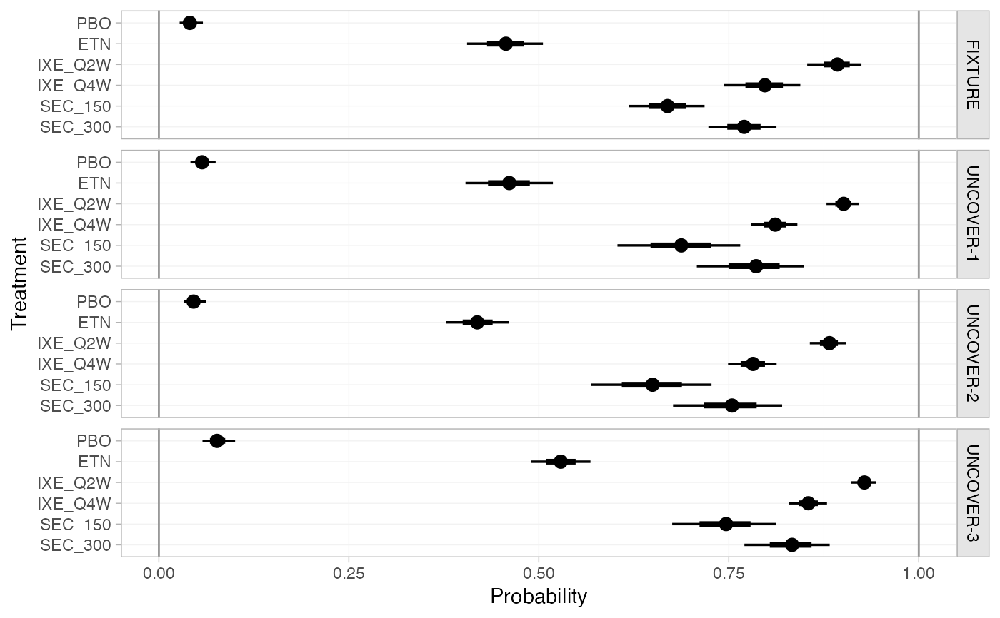

Obtain predictions of absolute effects from NMA models fitted with nma().
For example, if a model is fitted to binary data with a logit link, predicted
outcome probabilities or log odds can be produced.
Usage
# S3 method for stan_nma
predict(
object,
...,
baseline = NULL,
newdata = NULL,
study = NULL,
trt_ref = NULL,
type = c("link", "response"),
level = c("aggregate", "individual"),
baseline_type = c("link", "response"),
baseline_level = c("individual", "aggregate"),
probs = c(0.025, 0.25, 0.5, 0.75, 0.975),
predictive_distribution = FALSE,
summary = TRUE
)Arguments
- object
A
stan_nmaobject created bynma().- ...
Additional arguments, passed to
uniroot()for regression models ifbaseline_level = "aggregate".- baseline
An optional
distr()distribution for the baseline response (i.e. intercept), about which to produce absolute effects. IfNULL, predictions are produced using the baseline response for each study in the network with IPD or arm-based AgD.For regression models, this may be a list of
distr()distributions of the same length as the number of studies innewdata(possibly named by the study names, or otherwise in order of appearance innewdata).Use the
baseline_typeandbaseline_levelarguments to specify whether this distribution is on the response or linear predictor scale, and (for ML-NMR or models including IPD) whether this applies to an individual at the reference level of the covariates or over the entirenewdatapopulation, respectively. For example, in a model with a logit link withbaseline_type = "link", this would be a distribution for the baseline log odds of an event.Use the
trt_refargument to specify which treatment this distribution applies to.- newdata
Only required if a regression model is fitted and
baselineis specified. A data frame of covariate details, for which to produce predictions. Column names must match variables in the regression model.If
level = "aggregate"this should either be a data frame with integration points as produced byadd_integration()(one row per study), or a data frame with individual covariate values (one row per individual) which are summarised over.If
level = "individual"this should be a data frame of individual covariate values, one row per individual.If
NULL, predictions are produced for all studies with IPD and/or arm-based AgD in the network, depending on the value oflevel.- study
Column of
newdatawhich specifies study names or IDs. When not specified: ifnewdatacontains integration points produced byadd_integration(), studies will be labelled sequentially by row; otherwise data will be assumed to come from a single study.- trt_ref
Treatment to which the
baselineresponse distribution refers, ifbaselineis specified. By default, the baseline response distribution will refer to the network reference treatment. Coerced to character string.- type
Whether to produce predictions on the
"link"scale (the default, e.g. log odds) or"response"scale (e.g. probabilities).- level
The level at which predictions are produced, either
"aggregate"(the default), or"individual". Ifbaselineis not specified, predictions are produced for all IPD studies in the network iflevelis"individual"or"aggregate", and for all arm-based AgD studies in the network iflevelis"aggregate".- baseline_type
When a
baselinedistribution is given, specifies whether this corresponds to the"link"scale (the default, e.g. log odds) or"response"scale (e.g. probabilities).- baseline_level
When a
baselinedistribution is given, specifies whether this corresponds to an individual at the reference level of the covariates ("individual", the default), or from an (unadjusted) average outcome on the reference treatment in thenewdatapopulation ("aggregate"). Ignored for AgD NMA, since the only option is"aggregate"in this instance.- probs
Numeric vector of quantiles of interest to present in computed summary, default
c(0.025, 0.25, 0.5, 0.75, 0.975)- predictive_distribution
Logical, when a random effects model has been fitted, should the predictive distribution for absolute effects in a new study be returned? Default
FALSE.- summary
Logical, calculate posterior summaries? Default
TRUE.
Value
A nma_summary object if summary = TRUE, otherwise a list
containing a 3D MCMC array of samples and (for regression models) a data
frame of study information.
See also
plot.nma_summary() for plotting the predictions.
Examples
## Smoking cessation
# \donttest{
# Run smoking RE NMA example if not already available
if (!exists("smk_fit_RE")) example("example_smk_re", run.donttest = TRUE)
# }
# \donttest{
# Predicted log odds of success in each study in the network
predict(smk_fit_RE)
#> ---------------------------------------------------------------------- Study: 1 ----
#>
#> mean sd 2.5% 25% 50% 75% 97.5%
#> pred[1: No intervention] -2.79 0.32 -3.43 -2.99 -2.78 -2.57 -2.21
#> pred[1: Group counselling] -1.68 0.50 -2.66 -2.01 -1.69 -1.36 -0.67
#> pred[1: Individual counselling] -1.94 0.38 -2.70 -2.18 -1.93 -1.68 -1.23
#> pred[1: Self-help] -2.28 0.51 -3.30 -2.61 -2.28 -1.94 -1.27
#> Bulk_ESS Tail_ESS Rhat
#> pred[1: No intervention] 4010 2593 1
#> pred[1: Group counselling] 2162 2597 1
#> pred[1: Individual counselling] 2435 2772 1
#> pred[1: Self-help] 2101 2288 1
#>
#> ---------------------------------------------------------------------- Study: 2 ----
#>
#> mean sd 2.5% 25% 50% 75% 97.5%
#> pred[2: No intervention] -2.58 0.79 -4.18 -3.09 -2.57 -2.06 -1.08
#> pred[2: Group counselling] -1.48 0.78 -3.02 -1.97 -1.48 -1.00 0.08
#> pred[2: Individual counselling] -1.73 0.78 -3.28 -2.21 -1.73 -1.23 -0.18
#> pred[2: Self-help] -2.07 0.81 -3.68 -2.61 -2.08 -1.56 -0.46
#> Bulk_ESS Tail_ESS Rhat
#> pred[2: No intervention] 2676 2268 1
#> pred[2: Group counselling] 3153 2506 1
#> pred[2: Individual counselling] 2969 2428 1
#> pred[2: Self-help] 3079 2194 1
#>
#> ---------------------------------------------------------------------- Study: 3 ----
#>
#> mean sd 2.5% 25% 50% 75% 97.5%
#> pred[3: No intervention] -2.14 0.12 -2.38 -2.22 -2.14 -2.06 -1.92
#> pred[3: Group counselling] -1.04 0.46 -1.92 -1.35 -1.05 -0.74 -0.12
#> pred[3: Individual counselling] -1.29 0.26 -1.80 -1.46 -1.29 -1.13 -0.78
#> pred[3: Self-help] -1.64 0.43 -2.50 -1.92 -1.64 -1.36 -0.79
#> Bulk_ESS Tail_ESS Rhat
#> pred[3: No intervention] 7405 2655 1
#> pred[3: Group counselling] 2028 2431 1
#> pred[3: Individual counselling] 1563 2132 1
#> pred[3: Self-help] 1896 2270 1
#>
#> ---------------------------------------------------------------------- Study: 4 ----
#>
#> mean sd 2.5% 25% 50% 75% 97.5%
#> pred[4: No intervention] -4.05 0.58 -5.26 -4.43 -4.02 -3.64 -2.99
#> pred[4: Group counselling] -2.95 0.70 -4.34 -3.41 -2.94 -2.47 -1.64
#> pred[4: Individual counselling] -3.20 0.59 -4.42 -3.59 -3.17 -2.79 -2.12
#> pred[4: Self-help] -3.54 0.69 -4.96 -4.00 -3.53 -3.08 -2.22
#> Bulk_ESS Tail_ESS Rhat
#> pred[4: No intervention] 4360 2587 1
#> pred[4: Group counselling] 3273 2985 1
#> pred[4: Individual counselling] 3854 3019 1
#> pred[4: Self-help] 2958 2744 1
#>
#> ---------------------------------------------------------------------- Study: 5 ----
#>
#> mean sd 2.5% 25% 50% 75% 97.5%
#> pred[5: No intervention] -2.16 0.14 -2.42 -2.25 -2.16 -2.06 -1.89
#> pred[5: Group counselling] -1.05 0.46 -1.94 -1.36 -1.06 -0.76 -0.13
#> pred[5: Individual counselling] -1.31 0.27 -1.83 -1.49 -1.31 -1.12 -0.77
#> pred[5: Self-help] -1.65 0.43 -2.48 -1.94 -1.65 -1.38 -0.76
#> Bulk_ESS Tail_ESS Rhat
#> pred[5: No intervention] 6649 2995 1.00
#> pred[5: Group counselling] 1974 2278 1.01
#> pred[5: Individual counselling] 1586 2403 1.00
#> pred[5: Self-help] 1948 2398 1.00
#>
#> ---------------------------------------------------------------------- Study: 6 ----
#>
#> mean sd 2.5% 25% 50% 75% 97.5%
#> pred[6: No intervention] -3.43 0.72 -4.98 -3.88 -3.37 -2.92 -2.19
#> pred[6: Group counselling] -2.32 0.79 -4.00 -2.81 -2.27 -1.80 -0.90
#> pred[6: Individual counselling] -2.58 0.71 -4.10 -3.01 -2.52 -2.09 -1.35
#> pred[6: Self-help] -2.92 0.79 -4.61 -3.42 -2.87 -2.36 -1.48
#> Bulk_ESS Tail_ESS Rhat
#> pred[6: No intervention] 3117 2692 1
#> pred[6: Group counselling] 3273 2677 1
#> pred[6: Individual counselling] 3151 2441 1
#> pred[6: Self-help] 3234 2914 1
#>
#> ---------------------------------------------------------------------- Study: 7 ----
#>
#> mean sd 2.5% 25% 50% 75% 97.5%
#> pred[7: No intervention] -3.02 0.44 -3.96 -3.29 -2.99 -2.72 -2.24
#> pred[7: Group counselling] -1.92 0.60 -3.19 -2.30 -1.90 -1.51 -0.78
#> pred[7: Individual counselling] -2.18 0.47 -3.17 -2.47 -2.15 -1.86 -1.30
#> pred[7: Self-help] -2.52 0.58 -3.69 -2.88 -2.51 -2.12 -1.42
#> Bulk_ESS Tail_ESS Rhat
#> pred[7: No intervention] 3217 2724 1
#> pred[7: Group counselling] 2889 3034 1
#> pred[7: Individual counselling] 2860 2849 1
#> pred[7: Self-help] 2398 2598 1
#>
#> ---------------------------------------------------------------------- Study: 8 ----
#>
#> mean sd 2.5% 25% 50% 75% 97.5%
#> pred[8: No intervention] -2.72 0.58 -3.97 -3.08 -2.67 -2.31 -1.71
#> pred[8: Group counselling] -1.61 0.69 -3.05 -2.05 -1.59 -1.14 -0.33
#> pred[8: Individual counselling] -1.87 0.58 -3.11 -2.24 -1.82 -1.45 -0.84
#> pred[8: Self-help] -2.21 0.69 -3.58 -2.65 -2.18 -1.75 -0.93
#> Bulk_ESS Tail_ESS Rhat
#> pred[8: No intervention] 3210 2507 1
#> pred[8: Group counselling] 3186 2827 1
#> pred[8: Individual counselling] 3174 2539 1
#> pred[8: Self-help] 2720 2745 1
#>
#> ---------------------------------------------------------------------- Study: 9 ----
#>
#> mean sd 2.5% 25% 50% 75% 97.5%
#> pred[9: No intervention] -1.84 0.42 -2.71 -2.11 -1.82 -1.55 -1.09
#> pred[9: Group counselling] -0.74 0.60 -1.92 -1.13 -0.75 -0.33 0.44
#> pred[9: Individual counselling] -0.99 0.46 -1.92 -1.29 -0.97 -0.68 -0.13
#> pred[9: Self-help] -1.33 0.59 -2.50 -1.72 -1.34 -0.95 -0.16
#> Bulk_ESS Tail_ESS Rhat
#> pred[9: No intervention] 4684 2864 1
#> pred[9: Group counselling] 2997 2900 1
#> pred[9: Individual counselling] 3192 2644 1
#> pred[9: Self-help] 2794 2847 1
#>
#> --------------------------------------------------------------------- Study: 10 ----
#>
#> mean sd 2.5% 25% 50% 75% 97.5%
#> pred[10: No intervention] -2.08 0.12 -2.31 -2.17 -2.08 -2.00 -1.87
#> pred[10: Group counselling] -0.98 0.45 -1.84 -1.28 -0.98 -0.68 -0.11
#> pred[10: Individual counselling] -1.23 0.26 -1.74 -1.41 -1.24 -1.06 -0.70
#> pred[10: Self-help] -1.58 0.42 -2.39 -1.86 -1.58 -1.31 -0.70
#> Bulk_ESS Tail_ESS Rhat
#> pred[10: No intervention] 8004 3077 1.00
#> pred[10: Group counselling] 1942 2555 1.01
#> pred[10: Individual counselling] 1602 2156 1.00
#> pred[10: Self-help] 1853 1945 1.00
#>
#> --------------------------------------------------------------------- Study: 11 ----
#>
#> mean sd 2.5% 25% 50% 75% 97.5%
#> pred[11: No intervention] -3.62 0.23 -4.08 -3.77 -3.61 -3.47 -3.20
#> pred[11: Group counselling] -2.52 0.49 -3.47 -2.84 -2.52 -2.19 -1.56
#> pred[11: Individual counselling] -2.77 0.33 -3.42 -2.99 -2.77 -2.55 -2.13
#> pred[11: Self-help] -3.11 0.45 -4.00 -3.40 -3.12 -2.83 -2.21
#> Bulk_ESS Tail_ESS Rhat
#> pred[11: No intervention] 5952 2692 1
#> pred[11: Group counselling] 2241 2430 1
#> pred[11: Individual counselling] 2129 2529 1
#> pred[11: Self-help] 2112 2406 1
#>
#> --------------------------------------------------------------------- Study: 12 ----
#>
#> mean sd 2.5% 25% 50% 75% 97.5%
#> pred[12: No intervention] -2.22 0.13 -2.48 -2.31 -2.22 -2.13 -1.96
#> pred[12: Group counselling] -1.12 0.46 -1.98 -1.42 -1.12 -0.82 -0.20
#> pred[12: Individual counselling] -1.37 0.27 -1.89 -1.54 -1.37 -1.20 -0.82
#> pred[12: Self-help] -1.71 0.43 -2.55 -2.00 -1.72 -1.43 -0.85
#> Bulk_ESS Tail_ESS Rhat
#> pred[12: No intervention] 7713 2895 1.00
#> pred[12: Group counselling] 2037 2506 1.01
#> pred[12: Individual counselling] 1548 2383 1.00
#> pred[12: Self-help] 2015 2144 1.00
#>
#> --------------------------------------------------------------------- Study: 13 ----
#>
#> mean sd 2.5% 25% 50% 75% 97.5%
#> pred[13: No intervention] -2.67 0.45 -3.61 -2.97 -2.65 -2.35 -1.85
#> pred[13: Group counselling] -1.57 0.61 -2.76 -1.98 -1.56 -1.15 -0.38
#> pred[13: Individual counselling] -1.82 0.49 -2.79 -2.15 -1.81 -1.49 -0.89
#> pred[13: Self-help] -2.16 0.60 -3.34 -2.56 -2.15 -1.76 -0.98
#> Bulk_ESS Tail_ESS Rhat
#> pred[13: No intervention] 5028 3107 1
#> pred[13: Group counselling] 3261 3145 1
#> pred[13: Individual counselling] 3606 3688 1
#> pred[13: Self-help] 3066 2656 1
#>
#> --------------------------------------------------------------------- Study: 14 ----
#>
#> mean sd 2.5% 25% 50% 75% 97.5%
#> pred[14: No intervention] -2.41 0.23 -2.90 -2.56 -2.40 -2.25 -1.98
#> pred[14: Group counselling] -1.31 0.49 -2.28 -1.63 -1.31 -0.99 -0.33
#> pred[14: Individual counselling] -1.56 0.32 -2.19 -1.77 -1.55 -1.35 -0.97
#> pred[14: Self-help] -1.90 0.47 -2.81 -2.22 -1.90 -1.60 -0.98
#> Bulk_ESS Tail_ESS Rhat
#> pred[14: No intervention] 5494 2853 1
#> pred[14: Group counselling] 2389 2577 1
#> pred[14: Individual counselling] 2044 2825 1
#> pred[14: Self-help] 2236 2613 1
#>
#> --------------------------------------------------------------------- Study: 15 ----
#>
#> mean sd 2.5% 25% 50% 75% 97.5%
#> pred[15: No intervention] -2.69 0.72 -4.26 -3.14 -2.63 -2.19 -1.45
#> pred[15: Group counselling] -1.59 0.71 -3.10 -2.05 -1.55 -1.10 -0.30
#> pred[15: Individual counselling] -1.84 0.72 -3.43 -2.29 -1.78 -1.35 -0.57
#> pred[15: Self-help] -2.19 0.77 -3.87 -2.67 -2.15 -1.65 -0.81
#> Bulk_ESS Tail_ESS Rhat
#> pred[15: No intervention] 3249 2813 1
#> pred[15: Group counselling] 3600 3393 1
#> pred[15: Individual counselling] 3390 2661 1
#> pred[15: Self-help] 3115 2979 1
#>
#> --------------------------------------------------------------------- Study: 16 ----
#>
#> mean sd 2.5% 25% 50% 75% 97.5%
#> pred[16: No intervention] -2.62 0.35 -3.33 -2.84 -2.60 -2.37 -2.00
#> pred[16: Group counselling] -1.51 0.54 -2.55 -1.87 -1.51 -1.15 -0.43
#> pred[16: Individual counselling] -1.77 0.41 -2.62 -2.04 -1.76 -1.48 -1.00
#> pred[16: Self-help] -2.11 0.49 -3.07 -2.43 -2.10 -1.79 -1.16
#> Bulk_ESS Tail_ESS Rhat
#> pred[16: No intervention] 5750 2941 1
#> pred[16: Group counselling] 2669 3012 1
#> pred[16: Individual counselling] 2826 2839 1
#> pred[16: Self-help] 2404 2550 1
#>
#> --------------------------------------------------------------------- Study: 17 ----
#>
#> mean sd 2.5% 25% 50% 75% 97.5%
#> pred[17: No intervention] -2.38 0.11 -2.59 -2.45 -2.37 -2.30 -2.17
#> pred[17: Group counselling] -1.27 0.45 -2.12 -1.58 -1.29 -0.98 -0.37
#> pred[17: Individual counselling] -1.53 0.25 -2.03 -1.70 -1.53 -1.36 -1.00
#> pred[17: Self-help] -1.87 0.42 -2.69 -2.15 -1.87 -1.60 -1.02
#> Bulk_ESS Tail_ESS Rhat
#> pred[17: No intervention] 7245 2990 1.00
#> pred[17: Group counselling] 1972 2383 1.01
#> pred[17: Individual counselling] 1452 2106 1.00
#> pred[17: Self-help] 1929 2184 1.00
#>
#> --------------------------------------------------------------------- Study: 18 ----
#>
#> mean sd 2.5% 25% 50% 75% 97.5%
#> pred[18: No intervention] -2.57 0.27 -3.11 -2.75 -2.55 -2.38 -2.07
#> pred[18: Group counselling] -1.46 0.51 -2.46 -1.80 -1.47 -1.12 -0.45
#> pred[18: Individual counselling] -1.72 0.35 -2.39 -1.95 -1.72 -1.48 -1.03
#> pred[18: Self-help] -2.06 0.49 -3.00 -2.38 -2.06 -1.74 -1.08
#> Bulk_ESS Tail_ESS Rhat
#> pred[18: No intervention] 4673 3017 1
#> pred[18: Group counselling] 2251 2685 1
#> pred[18: Individual counselling] 2177 2748 1
#> pred[18: Self-help] 2301 2518 1
#>
#> --------------------------------------------------------------------- Study: 19 ----
#>
#> mean sd 2.5% 25% 50% 75% 97.5%
#> pred[19: No intervention] -1.90 0.12 -2.15 -1.98 -1.90 -1.82 -1.66
#> pred[19: Group counselling] -0.80 0.46 -1.66 -1.11 -0.80 -0.50 0.11
#> pred[19: Individual counselling] -1.05 0.27 -1.56 -1.23 -1.05 -0.88 -0.52
#> pred[19: Self-help] -1.39 0.43 -2.21 -1.67 -1.40 -1.13 -0.52
#> Bulk_ESS Tail_ESS Rhat
#> pred[19: No intervention] 7131 2571 1.00
#> pred[19: Group counselling] 2017 2309 1.01
#> pred[19: Individual counselling] 1574 2305 1.00
#> pred[19: Self-help] 1923 1990 1.00
#>
#> --------------------------------------------------------------------- Study: 20 ----
#>
#> mean sd 2.5% 25% 50% 75% 97.5%
#> pred[20: No intervention] -2.80 0.12 -3.05 -2.88 -2.80 -2.72 -2.56
#> pred[20: Group counselling] -1.70 0.45 -2.57 -2.01 -1.71 -1.40 -0.80
#> pred[20: Individual counselling] -1.95 0.26 -2.44 -2.13 -1.95 -1.77 -1.42
#> pred[20: Self-help] -2.29 0.43 -3.15 -2.57 -2.30 -2.02 -1.43
#> Bulk_ESS Tail_ESS Rhat
#> pred[20: No intervention] 7030 2959 1.00
#> pred[20: Group counselling] 1942 2489 1.01
#> pred[20: Individual counselling] 1562 2485 1.00
#> pred[20: Self-help] 1883 1916 1.00
#>
#> --------------------------------------------------------------------- Study: 21 ----
#>
#> mean sd 2.5% 25% 50% 75% 97.5%
#> pred[21: No intervention] -1.13 0.81 -2.78 -1.65 -1.13 -0.60 0.46
#> pred[21: Group counselling] -0.03 0.88 -1.76 -0.59 -0.02 0.54 1.74
#> pred[21: Individual counselling] -0.28 0.80 -1.87 -0.79 -0.28 0.24 1.27
#> pred[21: Self-help] -0.62 0.81 -2.25 -1.14 -0.63 -0.09 1.00
#> Bulk_ESS Tail_ESS Rhat
#> pred[21: No intervention] 2658 2578 1
#> pred[21: Group counselling] 2943 2667 1
#> pred[21: Individual counselling] 2925 2328 1
#> pred[21: Self-help] 3462 2402 1
#>
#> --------------------------------------------------------------------- Study: 22 ----
#>
#> mean sd 2.5% 25% 50% 75% 97.5%
#> pred[22: No intervention] -2.43 0.87 -4.14 -2.98 -2.42 -1.86 -0.75
#> pred[22: Group counselling] -1.32 0.81 -2.91 -1.84 -1.33 -0.79 0.28
#> pred[22: Individual counselling] -1.58 0.87 -3.27 -2.12 -1.58 -1.02 0.11
#> pred[22: Self-help] -1.92 0.84 -3.55 -2.46 -1.90 -1.37 -0.27
#> Bulk_ESS Tail_ESS Rhat
#> pred[22: No intervention] 2959 2592 1
#> pred[22: Group counselling] 3639 2627 1
#> pred[22: Individual counselling] 3092 2681 1
#> pred[22: Self-help] 3666 2425 1
#>
#> --------------------------------------------------------------------- Study: 23 ----
#>
#> mean sd 2.5% 25% 50% 75% 97.5%
#> pred[23: No intervention] -2.34 0.82 -3.97 -2.86 -2.33 -1.82 -0.73
#> pred[23: Group counselling] -1.23 0.79 -2.81 -1.76 -1.26 -0.72 0.35
#> pred[23: Individual counselling] -1.49 0.80 -3.04 -2.01 -1.49 -0.98 0.11
#> pred[23: Self-help] -1.83 0.86 -3.54 -2.41 -1.82 -1.26 -0.17
#> Bulk_ESS Tail_ESS Rhat
#> pred[23: No intervention] 2872 2713 1
#> pred[23: Group counselling] 3509 2521 1
#> pred[23: Individual counselling] 3336 2617 1
#> pred[23: Self-help] 3223 2948 1
#>
#> --------------------------------------------------------------------- Study: 24 ----
#>
#> mean sd 2.5% 25% 50% 75% 97.5%
#> pred[24: No intervention] -2.83 0.89 -4.63 -3.41 -2.80 -2.23 -1.13
#> pred[24: Group counselling] -1.73 0.87 -3.53 -2.29 -1.71 -1.16 -0.05
#> pred[24: Individual counselling] -1.98 0.86 -3.74 -2.54 -1.97 -1.40 -0.36
#> pred[24: Self-help] -2.32 0.92 -4.12 -2.91 -2.31 -1.73 -0.49
#> Bulk_ESS Tail_ESS Rhat
#> pred[24: No intervention] 3058 2574 1
#> pred[24: Group counselling] 3563 2705 1
#> pred[24: Individual counselling] 3531 2685 1
#> pred[24: Self-help] 3135 2457 1
#>
# Predicted probabilities of success in each study in the network
predict(smk_fit_RE, type = "response")
#> ---------------------------------------------------------------------- Study: 1 ----
#>
#> mean sd 2.5% 25% 50% 75% 97.5% Bulk_ESS
#> pred[1: No intervention] 0.06 0.02 0.03 0.05 0.06 0.07 0.10 4010
#> pred[1: Group counselling] 0.17 0.07 0.07 0.12 0.16 0.20 0.34 2162
#> pred[1: Individual counselling] 0.13 0.04 0.06 0.10 0.13 0.16 0.23 2435
#> pred[1: Self-help] 0.10 0.05 0.04 0.07 0.09 0.13 0.22 2101
#> Tail_ESS Rhat
#> pred[1: No intervention] 2593 1
#> pred[1: Group counselling] 2597 1
#> pred[1: Individual counselling] 2772 1
#> pred[1: Self-help] 2288 1
#>
#> ---------------------------------------------------------------------- Study: 2 ----
#>
#> mean sd 2.5% 25% 50% 75% 97.5% Bulk_ESS
#> pred[2: No intervention] 0.09 0.07 0.02 0.04 0.07 0.11 0.25 2676
#> pred[2: Group counselling] 0.21 0.12 0.05 0.12 0.19 0.27 0.52 3153
#> pred[2: Individual counselling] 0.17 0.11 0.04 0.10 0.15 0.23 0.45 2969
#> pred[2: Self-help] 0.14 0.10 0.02 0.07 0.11 0.17 0.39 3079
#> Tail_ESS Rhat
#> pred[2: No intervention] 2268 1
#> pred[2: Group counselling] 2506 1
#> pred[2: Individual counselling] 2428 1
#> pred[2: Self-help] 2194 1
#>
#> ---------------------------------------------------------------------- Study: 3 ----
#>
#> mean sd 2.5% 25% 50% 75% 97.5% Bulk_ESS
#> pred[3: No intervention] 0.11 0.01 0.08 0.10 0.11 0.11 0.13 7405
#> pred[3: Group counselling] 0.27 0.09 0.13 0.21 0.26 0.32 0.47 2028
#> pred[3: Individual counselling] 0.22 0.04 0.14 0.19 0.22 0.24 0.31 1563
#> pred[3: Self-help] 0.17 0.06 0.08 0.13 0.16 0.20 0.31 1896
#> Tail_ESS Rhat
#> pred[3: No intervention] 2655 1
#> pred[3: Group counselling] 2431 1
#> pred[3: Individual counselling] 2132 1
#> pred[3: Self-help] 2270 1
#>
#> ---------------------------------------------------------------------- Study: 4 ----
#>
#> mean sd 2.5% 25% 50% 75% 97.5% Bulk_ESS
#> pred[4: No intervention] 0.02 0.01 0.01 0.01 0.02 0.03 0.05 4360
#> pred[4: Group counselling] 0.06 0.04 0.01 0.03 0.05 0.08 0.16 3273
#> pred[4: Individual counselling] 0.05 0.03 0.01 0.03 0.04 0.06 0.11 3854
#> pred[4: Self-help] 0.03 0.02 0.01 0.02 0.03 0.04 0.10 2958
#> Tail_ESS Rhat
#> pred[4: No intervention] 2587 1
#> pred[4: Group counselling] 2985 1
#> pred[4: Individual counselling] 3019 1
#> pred[4: Self-help] 2744 1
#>
#> ---------------------------------------------------------------------- Study: 5 ----
#>
#> mean sd 2.5% 25% 50% 75% 97.5% Bulk_ESS
#> pred[5: No intervention] 0.10 0.01 0.08 0.10 0.10 0.11 0.13 6649
#> pred[5: Group counselling] 0.27 0.09 0.13 0.20 0.26 0.32 0.47 1974
#> pred[5: Individual counselling] 0.22 0.05 0.14 0.18 0.21 0.25 0.32 1586
#> pred[5: Self-help] 0.17 0.06 0.08 0.13 0.16 0.20 0.32 1948
#> Tail_ESS Rhat
#> pred[5: No intervention] 2995 1.00
#> pred[5: Group counselling] 2278 1.01
#> pred[5: Individual counselling] 2403 1.00
#> pred[5: Self-help] 2398 1.00
#>
#> ---------------------------------------------------------------------- Study: 6 ----
#>
#> mean sd 2.5% 25% 50% 75% 97.5% Bulk_ESS
#> pred[6: No intervention] 0.04 0.02 0.01 0.02 0.03 0.05 0.10 3117
#> pred[6: Group counselling] 0.11 0.07 0.02 0.06 0.09 0.14 0.29 3273
#> pred[6: Individual counselling] 0.08 0.05 0.02 0.05 0.07 0.11 0.21 3151
#> pred[6: Self-help] 0.06 0.05 0.01 0.03 0.05 0.09 0.18 3234
#> Tail_ESS Rhat
#> pred[6: No intervention] 2692 1
#> pred[6: Group counselling] 2677 1
#> pred[6: Individual counselling] 2441 1
#> pred[6: Self-help] 2914 1
#>
#> ---------------------------------------------------------------------- Study: 7 ----
#>
#> mean sd 2.5% 25% 50% 75% 97.5% Bulk_ESS
#> pred[7: No intervention] 0.05 0.02 0.02 0.04 0.05 0.06 0.10 3217
#> pred[7: Group counselling] 0.14 0.07 0.04 0.09 0.13 0.18 0.31 2889
#> pred[7: Individual counselling] 0.11 0.04 0.04 0.08 0.10 0.13 0.21 2860
#> pred[7: Self-help] 0.08 0.04 0.02 0.05 0.08 0.11 0.19 2398
#> Tail_ESS Rhat
#> pred[7: No intervention] 2724 1
#> pred[7: Group counselling] 3034 1
#> pred[7: Individual counselling] 2849 1
#> pred[7: Self-help] 2598 1
#>
#> ---------------------------------------------------------------------- Study: 8 ----
#>
#> mean sd 2.5% 25% 50% 75% 97.5% Bulk_ESS
#> pred[8: No intervention] 0.07 0.04 0.02 0.04 0.06 0.09 0.15 3210
#> pred[8: Group counselling] 0.19 0.10 0.05 0.11 0.17 0.24 0.42 3186
#> pred[8: Individual counselling] 0.15 0.07 0.04 0.10 0.14 0.19 0.30 3174
#> pred[8: Self-help] 0.12 0.07 0.03 0.07 0.10 0.15 0.28 2720
#> Tail_ESS Rhat
#> pred[8: No intervention] 2507 1
#> pred[8: Group counselling] 2827 1
#> pred[8: Individual counselling] 2539 1
#> pred[8: Self-help] 2745 1
#>
#> ---------------------------------------------------------------------- Study: 9 ----
#>
#> mean sd 2.5% 25% 50% 75% 97.5% Bulk_ESS
#> pred[9: No intervention] 0.14 0.05 0.06 0.11 0.14 0.18 0.25 4684
#> pred[9: Group counselling] 0.34 0.12 0.13 0.24 0.32 0.42 0.61 2997
#> pred[9: Individual counselling] 0.28 0.09 0.13 0.22 0.27 0.34 0.47 3192
#> pred[9: Self-help] 0.22 0.10 0.08 0.15 0.21 0.28 0.46 2794
#> Tail_ESS Rhat
#> pred[9: No intervention] 2864 1
#> pred[9: Group counselling] 2900 1
#> pred[9: Individual counselling] 2644 1
#> pred[9: Self-help] 2847 1
#>
#> --------------------------------------------------------------------- Study: 10 ----
#>
#> mean sd 2.5% 25% 50% 75% 97.5% Bulk_ESS
#> pred[10: No intervention] 0.11 0.01 0.09 0.10 0.11 0.12 0.13 8004
#> pred[10: Group counselling] 0.28 0.09 0.14 0.22 0.27 0.34 0.47 1942
#> pred[10: Individual counselling] 0.23 0.05 0.15 0.20 0.22 0.26 0.33 1602
#> pred[10: Self-help] 0.18 0.06 0.08 0.13 0.17 0.21 0.33 1853
#> Tail_ESS Rhat
#> pred[10: No intervention] 3077 1.00
#> pred[10: Group counselling] 2555 1.01
#> pred[10: Individual counselling] 2156 1.00
#> pred[10: Self-help] 1945 1.00
#>
#> --------------------------------------------------------------------- Study: 11 ----
#>
#> mean sd 2.5% 25% 50% 75% 97.5% Bulk_ESS
#> pred[11: No intervention] 0.03 0.01 0.02 0.02 0.03 0.03 0.04 5952
#> pred[11: Group counselling] 0.08 0.04 0.03 0.06 0.07 0.10 0.17 2241
#> pred[11: Individual counselling] 0.06 0.02 0.03 0.05 0.06 0.07 0.11 2129
#> pred[11: Self-help] 0.05 0.02 0.02 0.03 0.04 0.06 0.10 2112
#> Tail_ESS Rhat
#> pred[11: No intervention] 2692 1
#> pred[11: Group counselling] 2430 1
#> pred[11: Individual counselling] 2529 1
#> pred[11: Self-help] 2406 1
#>
#> --------------------------------------------------------------------- Study: 12 ----
#>
#> mean sd 2.5% 25% 50% 75% 97.5% Bulk_ESS
#> pred[12: No intervention] 0.10 0.01 0.08 0.09 0.10 0.11 0.12 7713
#> pred[12: Group counselling] 0.26 0.08 0.12 0.19 0.25 0.31 0.45 2037
#> pred[12: Individual counselling] 0.21 0.04 0.13 0.18 0.20 0.23 0.31 1548
#> pred[12: Self-help] 0.16 0.06 0.07 0.12 0.15 0.19 0.30 2015
#> Tail_ESS Rhat
#> pred[12: No intervention] 2895 1.00
#> pred[12: Group counselling] 2506 1.01
#> pred[12: Individual counselling] 2383 1.00
#> pred[12: Self-help] 2144 1.00
#>
#> --------------------------------------------------------------------- Study: 13 ----
#>
#> mean sd 2.5% 25% 50% 75% 97.5% Bulk_ESS
#> pred[13: No intervention] 0.07 0.03 0.03 0.05 0.07 0.09 0.14 5028
#> pred[13: Group counselling] 0.19 0.09 0.06 0.12 0.17 0.24 0.41 3261
#> pred[13: Individual counselling] 0.15 0.06 0.06 0.10 0.14 0.18 0.29 3606
#> pred[13: Self-help] 0.12 0.06 0.03 0.07 0.10 0.15 0.27 3066
#> Tail_ESS Rhat
#> pred[13: No intervention] 3107 1
#> pred[13: Group counselling] 3145 1
#> pred[13: Individual counselling] 3688 1
#> pred[13: Self-help] 2656 1
#>
#> --------------------------------------------------------------------- Study: 14 ----
#>
#> mean sd 2.5% 25% 50% 75% 97.5% Bulk_ESS
#> pred[14: No intervention] 0.08 0.02 0.05 0.07 0.08 0.10 0.12 5494
#> pred[14: Group counselling] 0.22 0.08 0.09 0.16 0.21 0.27 0.42 2389
#> pred[14: Individual counselling] 0.18 0.05 0.10 0.14 0.17 0.21 0.27 2044
#> pred[14: Self-help] 0.14 0.06 0.06 0.10 0.13 0.17 0.27 2236
#> Tail_ESS Rhat
#> pred[14: No intervention] 2853 1
#> pred[14: Group counselling] 2577 1
#> pred[14: Individual counselling] 2825 1
#> pred[14: Self-help] 2613 1
#>
#> --------------------------------------------------------------------- Study: 15 ----
#>
#> mean sd 2.5% 25% 50% 75% 97.5% Bulk_ESS
#> pred[15: No intervention] 0.08 0.05 0.01 0.04 0.07 0.10 0.19 3249
#> pred[15: Group counselling] 0.19 0.10 0.04 0.11 0.17 0.25 0.43 3600
#> pred[15: Individual counselling] 0.16 0.09 0.03 0.09 0.14 0.21 0.36 3390
#> pred[15: Self-help] 0.12 0.08 0.02 0.06 0.10 0.16 0.31 3115
#> Tail_ESS Rhat
#> pred[15: No intervention] 2813 1
#> pred[15: Group counselling] 3393 1
#> pred[15: Individual counselling] 2661 1
#> pred[15: Self-help] 2979 1
#>
#> --------------------------------------------------------------------- Study: 16 ----
#>
#> mean sd 2.5% 25% 50% 75% 97.5% Bulk_ESS
#> pred[16: No intervention] 0.07 0.02 0.03 0.06 0.07 0.09 0.12 5750
#> pred[16: Group counselling] 0.19 0.08 0.07 0.13 0.18 0.24 0.39 2669
#> pred[16: Individual counselling] 0.15 0.05 0.07 0.12 0.15 0.19 0.27 2826
#> pred[16: Self-help] 0.12 0.05 0.04 0.08 0.11 0.14 0.24 2404
#> Tail_ESS Rhat
#> pred[16: No intervention] 2941 1
#> pred[16: Group counselling] 3012 1
#> pred[16: Individual counselling] 2839 1
#> pred[16: Self-help] 2550 1
#>
#> --------------------------------------------------------------------- Study: 17 ----
#>
#> mean sd 2.5% 25% 50% 75% 97.5% Bulk_ESS
#> pred[17: No intervention] 0.09 0.01 0.07 0.08 0.09 0.09 0.10 7245
#> pred[17: Group counselling] 0.23 0.08 0.11 0.17 0.22 0.27 0.41 1972
#> pred[17: Individual counselling] 0.18 0.04 0.12 0.15 0.18 0.20 0.27 1452
#> pred[17: Self-help] 0.14 0.05 0.06 0.10 0.13 0.17 0.26 1929
#> Tail_ESS Rhat
#> pred[17: No intervention] 2990 1.00
#> pred[17: Group counselling] 2383 1.01
#> pred[17: Individual counselling] 2106 1.00
#> pred[17: Self-help] 2184 1.00
#>
#> --------------------------------------------------------------------- Study: 18 ----
#>
#> mean sd 2.5% 25% 50% 75% 97.5% Bulk_ESS
#> pred[18: No intervention] 0.07 0.02 0.04 0.06 0.07 0.08 0.11 4673
#> pred[18: Group counselling] 0.20 0.08 0.08 0.14 0.19 0.25 0.39 2251
#> pred[18: Individual counselling] 0.16 0.05 0.08 0.13 0.15 0.19 0.26 2177
#> pred[18: Self-help] 0.12 0.05 0.05 0.08 0.11 0.15 0.25 2301
#> Tail_ESS Rhat
#> pred[18: No intervention] 3017 1
#> pred[18: Group counselling] 2685 1
#> pred[18: Individual counselling] 2748 1
#> pred[18: Self-help] 2518 1
#>
#> --------------------------------------------------------------------- Study: 19 ----
#>
#> mean sd 2.5% 25% 50% 75% 97.5% Bulk_ESS
#> pred[19: No intervention] 0.13 0.01 0.10 0.12 0.13 0.14 0.16 7131
#> pred[19: Group counselling] 0.32 0.10 0.16 0.25 0.31 0.38 0.53 2017
#> pred[19: Individual counselling] 0.26 0.05 0.17 0.23 0.26 0.29 0.37 1574
#> pred[19: Self-help] 0.21 0.07 0.10 0.16 0.20 0.24 0.37 1923
#> Tail_ESS Rhat
#> pred[19: No intervention] 2571 1.00
#> pred[19: Group counselling] 2309 1.01
#> pred[19: Individual counselling] 2305 1.00
#> pred[19: Self-help] 1990 1.00
#>
#> --------------------------------------------------------------------- Study: 20 ----
#>
#> mean sd 2.5% 25% 50% 75% 97.5% Bulk_ESS
#> pred[20: No intervention] 0.06 0.01 0.05 0.05 0.06 0.06 0.07 7030
#> pred[20: Group counselling] 0.16 0.06 0.07 0.12 0.15 0.20 0.31 1942
#> pred[20: Individual counselling] 0.13 0.03 0.08 0.11 0.12 0.15 0.19 1562
#> pred[20: Self-help] 0.10 0.04 0.04 0.07 0.09 0.12 0.19 1883
#> Tail_ESS Rhat
#> pred[20: No intervention] 2959 1.00
#> pred[20: Group counselling] 2489 1.01
#> pred[20: Individual counselling] 2485 1.00
#> pred[20: Self-help] 1916 1.00
#>
#> --------------------------------------------------------------------- Study: 21 ----
#>
#> mean sd 2.5% 25% 50% 75% 97.5% Bulk_ESS
#> pred[21: No intervention] 0.27 0.14 0.06 0.16 0.24 0.35 0.61 2658
#> pred[21: Group counselling] 0.49 0.19 0.15 0.36 0.49 0.63 0.85 2943
#> pred[21: Individual counselling] 0.44 0.17 0.13 0.31 0.43 0.56 0.78 2925
#> pred[21: Self-help] 0.37 0.17 0.10 0.24 0.35 0.48 0.73 3462
#> Tail_ESS Rhat
#> pred[21: No intervention] 2578 1
#> pred[21: Group counselling] 2667 1
#> pred[21: Individual counselling] 2328 1
#> pred[21: Self-help] 2402 1
#>
#> --------------------------------------------------------------------- Study: 22 ----
#>
#> mean sd 2.5% 25% 50% 75% 97.5% Bulk_ESS
#> pred[22: No intervention] 0.10 0.08 0.02 0.05 0.08 0.13 0.32 2959
#> pred[22: Group counselling] 0.24 0.14 0.05 0.14 0.21 0.31 0.57 3639
#> pred[22: Individual counselling] 0.20 0.13 0.04 0.11 0.17 0.27 0.53 3092
#> pred[22: Self-help] 0.15 0.11 0.03 0.08 0.13 0.20 0.43 3666
#> Tail_ESS Rhat
#> pred[22: No intervention] 2592 1
#> pred[22: Group counselling] 2627 1
#> pred[22: Individual counselling] 2681 1
#> pred[22: Self-help] 2425 1
#>
#> --------------------------------------------------------------------- Study: 23 ----
#>
#> mean sd 2.5% 25% 50% 75% 97.5% Bulk_ESS
#> pred[23: No intervention] 0.11 0.08 0.02 0.05 0.09 0.14 0.32 2872
#> pred[23: Group counselling] 0.25 0.14 0.06 0.15 0.22 0.33 0.59 3509
#> pred[23: Individual counselling] 0.21 0.12 0.05 0.12 0.18 0.27 0.53 3336
#> pred[23: Self-help] 0.17 0.12 0.03 0.08 0.14 0.22 0.46 3223
#> Tail_ESS Rhat
#> pred[23: No intervention] 2713 1
#> pred[23: Group counselling] 2521 1
#> pred[23: Individual counselling] 2617 1
#> pred[23: Self-help] 2948 1
#>
#> --------------------------------------------------------------------- Study: 24 ----
#>
#> mean sd 2.5% 25% 50% 75% 97.5% Bulk_ESS
#> pred[24: No intervention] 0.07 0.06 0.01 0.03 0.06 0.10 0.24 3058
#> pred[24: Group counselling] 0.18 0.12 0.03 0.09 0.15 0.24 0.49 3563
#> pred[24: Individual counselling] 0.15 0.10 0.02 0.07 0.12 0.20 0.41 3531
#> pred[24: Self-help] 0.12 0.09 0.02 0.05 0.09 0.15 0.38 3135
#> Tail_ESS Rhat
#> pred[24: No intervention] 2574 1
#> pred[24: Group counselling] 2705 1
#> pred[24: Individual counselling] 2685 1
#> pred[24: Self-help] 2457 1
#>
# Predicted probabilities in a population with 67 observed events out of 566
# individuals on No Intervention, corresponding to a Beta(67, 566 - 67)
# distribution on the baseline probability of response, using
# `baseline_type = "response"`
(smk_pred_RE <- predict(smk_fit_RE,
baseline = distr(qbeta, 67, 566 - 67),
baseline_type = "response",
type = "response"))
#> mean sd 2.5% 25% 50% 75% 97.5% Bulk_ESS
#> pred[No intervention] 0.12 0.01 0.09 0.11 0.12 0.13 0.15 3879
#> pred[Group counselling] 0.30 0.09 0.14 0.23 0.28 0.35 0.50 1978
#> pred[Individual counselling] 0.24 0.05 0.16 0.21 0.24 0.27 0.35 1620
#> pred[Self-help] 0.19 0.07 0.09 0.14 0.18 0.23 0.35 1918
#> Tail_ESS Rhat
#> pred[No intervention] 3932 1.00
#> pred[Group counselling] 2522 1.01
#> pred[Individual counselling] 2526 1.00
#> pred[Self-help] 2230 1.00
plot(smk_pred_RE, ref_line = c(0, 1))
# Predicted probabilities in a population with a baseline log odds of
# response on No Intervention given a Normal distribution with mean -2
# and SD 0.13, using `baseline_type = "link"` (the default)
# Note: this is approximately equivalent to the above Beta distribution on
# the baseline probability
(smk_pred_RE2 <- predict(smk_fit_RE,
baseline = distr(qnorm, mean = -2, sd = 0.13),
type = "response"))
#> mean sd 2.5% 25% 50% 75% 97.5% Bulk_ESS
#> pred[No intervention] 0.12 0.01 0.09 0.11 0.12 0.13 0.15 4052
#> pred[Group counselling] 0.30 0.09 0.14 0.23 0.29 0.35 0.50 2002
#> pred[Individual counselling] 0.24 0.05 0.16 0.21 0.24 0.27 0.35 1581
#> pred[Self-help] 0.19 0.07 0.09 0.14 0.18 0.23 0.35 1929
#> Tail_ESS Rhat
#> pred[No intervention] 3895 1
#> pred[Group counselling] 2582 1
#> pred[Individual counselling] 2329 1
#> pred[Self-help] 2310 1
plot(smk_pred_RE2, ref_line = c(0, 1))
# }
## Plaque psoriasis ML-NMR
# \donttest{
# Run plaque psoriasis ML-NMR example if not already available
if (!exists("pso_fit")) example("example_pso_mlnmr", run.donttest = TRUE)
# }
# \donttest{
# Predicted probabilities of response in each study in the network
(pso_pred <- predict(pso_fit, type = "response"))
#> ---------------------------------------------------------------- Study: FIXTURE ----
#>
#> mean sd 2.5% 25% 50% 75% 97.5% Bulk_ESS Tail_ESS
#> pred[FIXTURE: PBO] 0.04 0.01 0.03 0.04 0.04 0.05 0.06 4297 3143
#> pred[FIXTURE: ETN] 0.46 0.02 0.41 0.44 0.46 0.47 0.50 6080 3243
#> pred[FIXTURE: IXE_Q2W] 0.89 0.02 0.85 0.88 0.89 0.90 0.92 7186 3252
#> pred[FIXTURE: IXE_Q4W] 0.80 0.03 0.74 0.78 0.80 0.81 0.84 7984 3411
#> pred[FIXTURE: SEC_150] 0.67 0.03 0.62 0.65 0.67 0.69 0.72 9064 3020
#> pred[FIXTURE: SEC_300] 0.77 0.02 0.72 0.75 0.77 0.79 0.82 7754 3167
#> Rhat
#> pred[FIXTURE: PBO] 1
#> pred[FIXTURE: ETN] 1
#> pred[FIXTURE: IXE_Q2W] 1
#> pred[FIXTURE: IXE_Q4W] 1
#> pred[FIXTURE: SEC_150] 1
#> pred[FIXTURE: SEC_300] 1
#>
#> -------------------------------------------------------------- Study: UNCOVER-1 ----
#>
#> mean sd 2.5% 25% 50% 75% 97.5% Bulk_ESS Tail_ESS
#> pred[UNCOVER-1: PBO] 0.06 0.01 0.04 0.05 0.06 0.06 0.08 5324 3025
#> pred[UNCOVER-1: ETN] 0.46 0.03 0.40 0.44 0.46 0.48 0.52 8022 3112
#> pred[UNCOVER-1: IXE_Q2W] 0.90 0.01 0.88 0.89 0.90 0.91 0.92 8012 2922
#> pred[UNCOVER-1: IXE_Q4W] 0.81 0.02 0.78 0.80 0.81 0.82 0.84 9362 3210
#> pred[UNCOVER-1: SEC_150] 0.69 0.04 0.60 0.66 0.69 0.72 0.77 7508 3519
#> pred[UNCOVER-1: SEC_300] 0.78 0.04 0.71 0.76 0.79 0.81 0.85 7331 3317
#> Rhat
#> pred[UNCOVER-1: PBO] 1
#> pred[UNCOVER-1: ETN] 1
#> pred[UNCOVER-1: IXE_Q2W] 1
#> pred[UNCOVER-1: IXE_Q4W] 1
#> pred[UNCOVER-1: SEC_150] 1
#> pred[UNCOVER-1: SEC_300] 1
#>
#> -------------------------------------------------------------- Study: UNCOVER-2 ----
#>
#> mean sd 2.5% 25% 50% 75% 97.5% Bulk_ESS Tail_ESS
#> pred[UNCOVER-2: PBO] 0.05 0.01 0.03 0.04 0.05 0.05 0.06 5818 3192
#> pred[UNCOVER-2: ETN] 0.42 0.02 0.38 0.41 0.42 0.43 0.46 7286 2961
#> pred[UNCOVER-2: IXE_Q2W] 0.88 0.01 0.86 0.87 0.88 0.89 0.90 7204 2473
#> pred[UNCOVER-2: IXE_Q4W] 0.78 0.02 0.75 0.77 0.78 0.79 0.81 8999 3253
#> pred[UNCOVER-2: SEC_150] 0.65 0.04 0.57 0.62 0.65 0.68 0.73 7001 3302
#> pred[UNCOVER-2: SEC_300] 0.75 0.04 0.68 0.73 0.75 0.78 0.82 6812 3159
#> Rhat
#> pred[UNCOVER-2: PBO] 1
#> pred[UNCOVER-2: ETN] 1
#> pred[UNCOVER-2: IXE_Q2W] 1
#> pred[UNCOVER-2: IXE_Q4W] 1
#> pred[UNCOVER-2: SEC_150] 1
#> pred[UNCOVER-2: SEC_300] 1
#>
#> -------------------------------------------------------------- Study: UNCOVER-3 ----
#>
#> mean sd 2.5% 25% 50% 75% 97.5% Bulk_ESS Tail_ESS
#> pred[UNCOVER-3: PBO] 0.08 0.01 0.06 0.07 0.08 0.08 0.10 5744 3209
#> pred[UNCOVER-3: ETN] 0.53 0.02 0.49 0.52 0.53 0.54 0.57 7902 2959
#> pred[UNCOVER-3: IXE_Q2W] 0.93 0.01 0.91 0.92 0.93 0.93 0.94 6491 2906
#> pred[UNCOVER-3: IXE_Q4W] 0.85 0.01 0.83 0.85 0.85 0.86 0.88 7644 2888
#> pred[UNCOVER-3: SEC_150] 0.75 0.03 0.68 0.72 0.75 0.77 0.81 7591 3034
#> pred[UNCOVER-3: SEC_300] 0.83 0.03 0.77 0.81 0.83 0.85 0.88 7145 3370
#> Rhat
#> pred[UNCOVER-3: PBO] 1
#> pred[UNCOVER-3: ETN] 1
#> pred[UNCOVER-3: IXE_Q2W] 1
#> pred[UNCOVER-3: IXE_Q4W] 1
#> pred[UNCOVER-3: SEC_150] 1
#> pred[UNCOVER-3: SEC_300] 1
#>
plot(pso_pred, ref_line = c(0, 1))

# Predicted probabilites of response in a new target population, with means
# and SDs or proportions given by
new_agd_int <- data.frame(
bsa_mean = 0.6,
bsa_sd = 0.3,
prevsys = 0.1,
psa = 0.2,
weight_mean = 10,
weight_sd = 1,
durnpso_mean = 3,
durnpso_sd = 1
)
# We need to add integration points to this data frame of new data
# We use the weighted mean correlation matrix computed from the IPD studies
new_agd_int <- add_integration(new_agd_int,
durnpso = distr(qgamma, mean = durnpso_mean, sd = durnpso_sd),
prevsys = distr(qbern, prob = prevsys),
bsa = distr(qlogitnorm, mean = bsa_mean, sd = bsa_sd),
weight = distr(qgamma, mean = weight_mean, sd = weight_sd),
psa = distr(qbern, prob = psa),
cor = pso_net$int_cor,
n_int = 1000)
# Predicted probabilities of achieving PASI 75 in this target population, given
# a Normal(-1.75, 0.08^2) distribution on the baseline probit-probability of
# response on Placebo (at the reference levels of the covariates), are given by
(pso_pred_new <- predict(pso_fit,
type = "response",
newdata = new_agd_int,
baseline = distr(qnorm, -1.75, 0.08)))
#> ------------------------------------------------------------------ Study: New 1 ----
#>
#> mean sd 2.5% 25% 50% 75% 97.5% Bulk_ESS Tail_ESS Rhat
#> pred[New 1: PBO] 0.06 0.03 0.02 0.04 0.06 0.07 0.12 5156 3530 1
#> pred[New 1: ETN] 0.37 0.06 0.25 0.33 0.37 0.41 0.49 5916 3501 1
#> pred[New 1: IXE_Q2W] 0.90 0.03 0.84 0.88 0.90 0.92 0.94 5688 3456 1
#> pred[New 1: IXE_Q4W] 0.81 0.04 0.72 0.78 0.81 0.83 0.87 5997 3687 1
#> pred[New 1: SEC_150] 0.68 0.06 0.56 0.64 0.68 0.72 0.78 5627 3212 1
#> pred[New 1: SEC_300] 0.78 0.05 0.68 0.75 0.78 0.81 0.86 6087 3212 1
#>
plot(pso_pred_new, ref_line = c(0, 1))
# }